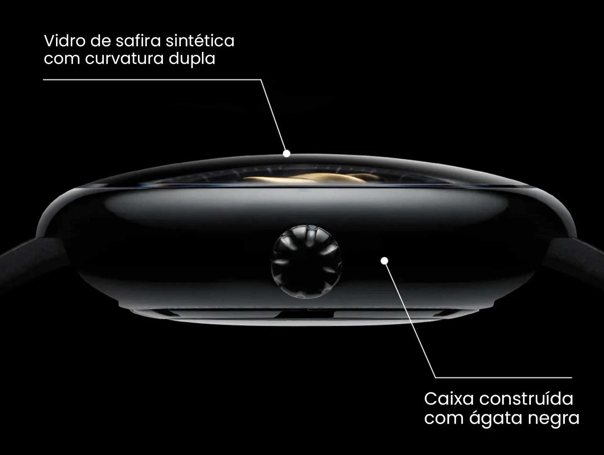
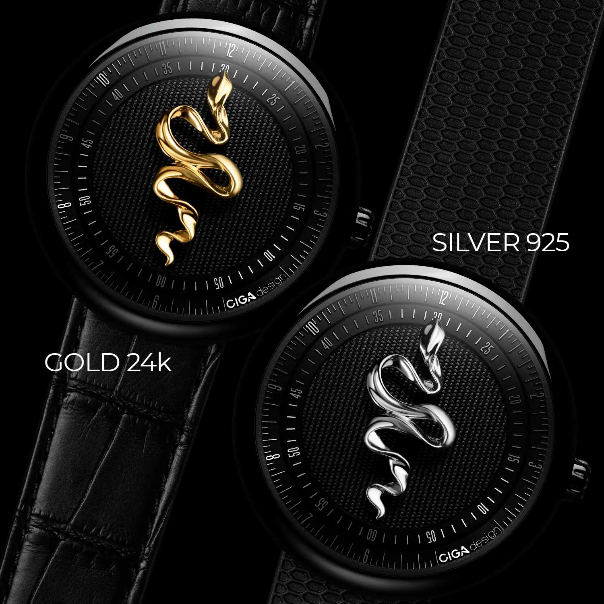
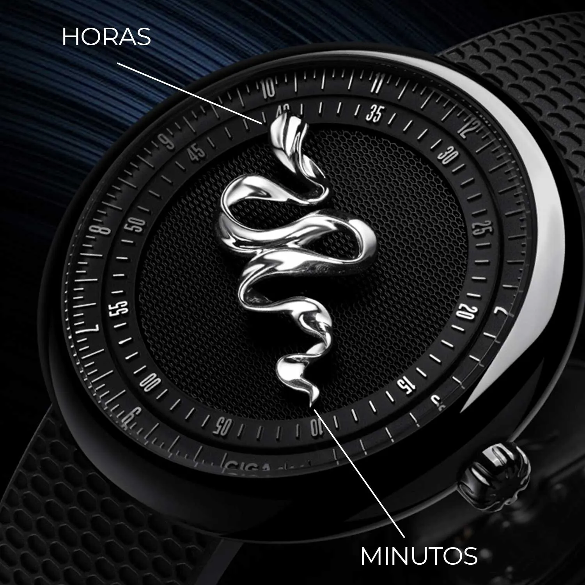
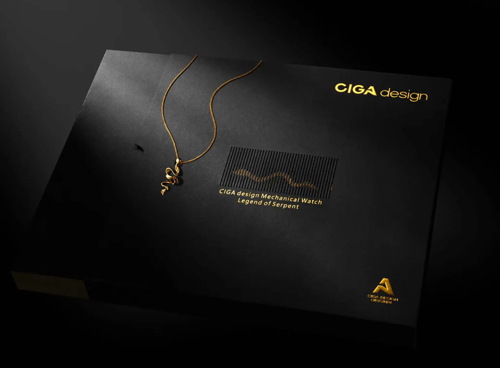
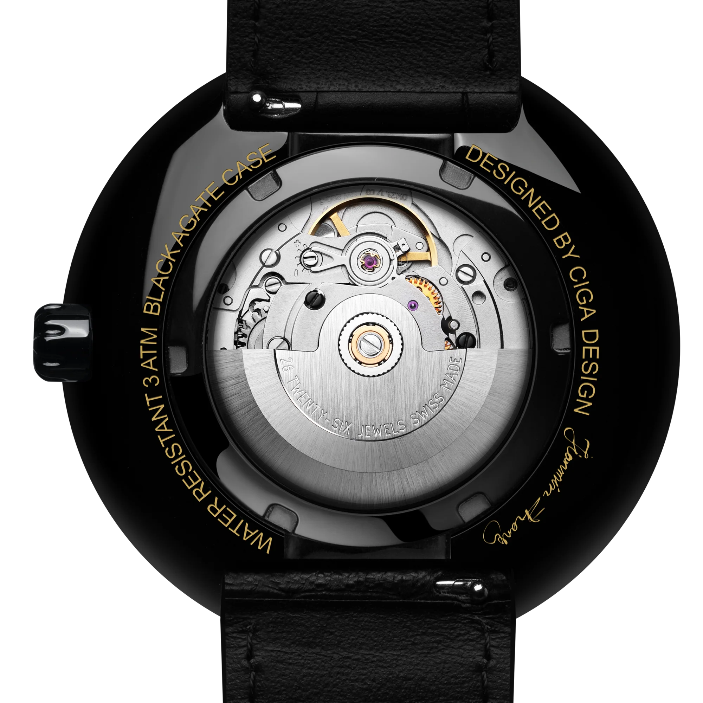

Ônix preto, edição numerada de 365 peças e um discurso mais raro dentro do catálogo da CIGA. O Legend of Serpent é menos sobre volume e mais sobre símbolo, material e exclusividade.
Movimento suíço CD-04-S · 41h reserva de marcha
Mitologia, pedra preciosa e relojoaria suíça convergem em apenas 365 peças numeradas, uma por dia do ano.

O ônix preto é parte central da identidade do Legend of Serpent. Mais do que ornamentação, ele cria densidade visual, contraste e um senso de raridade que combina com a proposta numerada do relógio.
A serpente, símbolo universal de renovação e sabedoria, é o tema central do mostrador. Gravada em relevo com precisão CNC milimétrica, a serpente envolve o centro do mostrador em uma composição que mistura mitologia, artesanato e alta tecnologia relojoeira. Cada peça é numerada individualmente, você conhece o número da sua.

O movimento CD-04-S de base suíça opera a 28.800 semi-oscilações por hora, com 26 joias e 41 horas de reserva de marcha. A melhor forma de comunicar esse ponto é tratá-lo como reforço de credencial, não como competição direta com a relojoaria suíça tradicional.
O fundo de safira transparente revela o rotor personalizado com motivos da serpente, um detalhe exclusivo desta edição que só quem possui a peça conhece. A experiência de virar o pulso e ver o movimento numerado é única e inreplicável.
Pedra de ônix natural integrada na caixa, símbolo milenar de proteção e poder presente nas maiores civilizações antigas.
Apenas 365 peças numeradas no mundo. Cada relógio carrega seu número único, colecionável por definição.
Movimento de base suíça com 26 joias, 28.800 vph e 41 horas de reserva, usado aqui como base mecânica para uma edição de tiragem muito restrita.
A serpente no mostrador é gravada por fresamento CNC de alta precisão, linhas e curvas com exatidão relojoeira contemporânea.
Edição limitada com movimento suíço, ônix natural e numeração individual, cada detalhe é parte da raridade.

| Tamanho da Caixa | 46,5 mm |
| Espessura | 15,9 mm |
| Material da Caixa | Ônix preto natural + aço inoxidável |
| Vidro | Cristal de safira anti-reflexo |
| Fundo | Transparente de safira com rotor personalizado |
| Movimento | CIGA CD-04-S (base suíça) |
| Frequência | 28.800 semi-oscilações/h (4 Hz) |
| Reserva de Marcha | ≥ 41 horas |
| Joias | 26 rubis |
| Resistência à Água | 3 ATM (30 metros) |
| Pulseira | Couro legítimo com textura de escamas |
| Largura da Pulseira | 22 mm |
| Edição | Limitada, 365 peças numeradas individualmente |
O texto do Legend of Serpent foi mantido mais sóbrio para valorizar o que ele realmente tem de mais forte: tiragem limitada, ônix, rotor personalizado e uma base mecânica mais refinada que sustenta a proposta especial da peça.
Uma edição de 365 peças exige comunicação à altura da raridade. Cada palavra conta.
O Legend of Serpent é o relógio CIGA design mais raro disponível. Com apenas 365 peças numeradas, ele comunica exclusividade antes mesmo de qualquer palavra. Sua narrativa deve reforçar essa raridade, e a riqueza simbólica da serpente e do ônix como materiais e conceitos.
Dez ângulos narrativos para maximizar o impacto do seu conteúdo sobre o Legend of Serpent.
| # | Direcionamento | Foco Narrativo | Base do Script (Exemplo) |
|---|---|---|---|
| 01 | Um por Dia do Ano | 365 peças como metáfora do tempo | "365 peças. Uma por dia do ano. Qual é o número do seu?" |
| 02 | A Serpente que Renova | Simbologia universal da serpente | "Em toda cultura, a serpente representa renovação. No pulso, ela marca o tempo." |
| 03 | Ônix de Faraós | História milenar do ônix negro | "Os faraós usavam ônix como proteção. Você usa no pulso em 2024." |
| 04 | O Número que é Seu | Numeração individual como identidade | "Cada peça tem um número. O seu é único no mundo. Quantos podem dizer isso?" |
| 05 | Suíço por Dentro | Calibre de base suíça como credencial | "Design chinês premiado. Coração suíço. A melhor combinação possível." |
| 06 | A Serpente que Só Você Vê | Rotor personalizado no fundo de safira | "Vire o pulso. A serpente também está no movimento. Um segredo para o dono." |
| 07 | Coleção que Valoriza | Edição limitada como investimento | "365 peças no mundo. Com o tempo, quem tem é quem tem. Simples assim." |
| 08 | 41 Horas de Precision | Reserva superior ao padrão | "O movimento suíço guarda energia por 41 horas. Uma hora a mais que o padrão." |
| 09 | Para Presentear com História | Ocasiões especiais, presente único | "Um presente que vem com um número, uma pedra e uma lenda. Não tem igual." |
| 10 | Safira que Revela | Cristal de safira frente e fundo | "Safira na frente protege. Safira no fundo revela. Transparência total." |
Imagens oficiais do Legend of Serpent disponíveis para uso em seu conteúdo.


Duas edições joia no catálogo brasileiro: 18K Gold e 925 Silver. Cada uma traz mostrador, ônix e tratamento metálico próprios.
Compre direto no site oficial da CIGA design Brasil. Garantia, parcelamento e envio para todo o país pela JG Importadora.
Comprar no Site Oficial usecigadesign.com.br